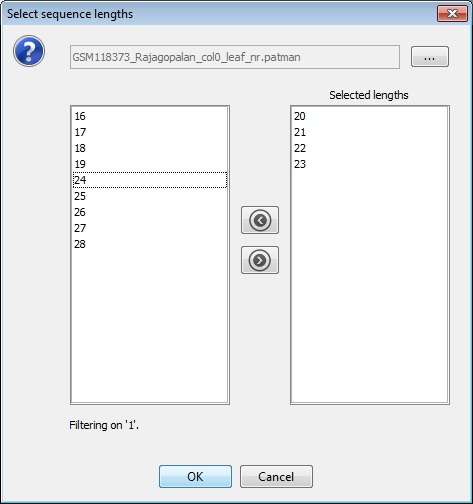

Open Patman File
The 'Open Patman file' menu-item lets the user choose a file generated by the Sequence Alignment tool. The menu-item has two sub-items, 'View all...' and 'View aggregated...'. When either one is clicked the user is prompted for a data file. Once the file has been loaded, a list of sequence lengths contained in the file is displayed from which the user can choose.

The arrow buttons between the two lists copy all of the items in the direction indicated. To copy a single item double-click on its name.
After clicking OK, the user is then prompted for a sequence range by specifying a start and an end base position.
View all...
All of the sequences which match the given criteria are then displayed. The glyph's colour is set based on the sequence length according to:| Length | Colour |
|---|---|
| 15-19 | Pink |
| 20-21 | Red |
| 22-23 | Green |
| 24-25 | Blue |
The height of the glyph maps to the abundance of the sequence, with taller glyphs having a higher abundance.
View aggregated...
The aggregated view must have four sequence lengths. The user is also prompted for the number of 'windows' into which the range will be divided. Once the inputs have been provided, the data is processed and an aggregated view is displayed.
Each striped rectangular glyph represents a 'window'. The absence of a glyph indicates that no sequences are located in that 'window'. The width of the coloured stripes represent the relative abundance of the different lengths. The four stripes are coloured (from left to right) red, green, orange and blue. The relative heights of the different glyphs represents the overall abundance in that window. When the mouse hovers over a glyph the help-tip shows information about the 'window' together with a sequence length to abundance breakdown.
To show the individual short reads for a 'window', right-click on the glyph and choose 'Show all reads' from the context menu. A new tier will then be added displaying the reads.